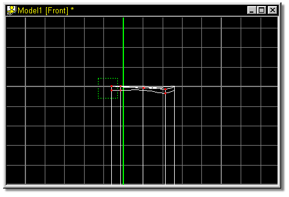
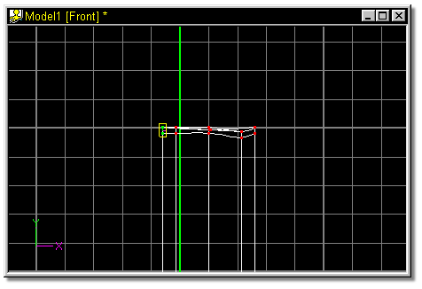
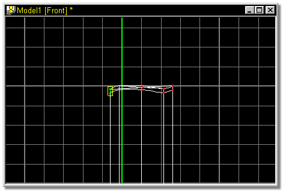

Figure 29
The screen should look similar to figure 30.

Figure 30
Press the down arrow on the keyboard 6 times, until the model looks similar to
the one shown in figure 31.

 Click the Group button, and select the points shown in figure 29 by dragging
a bounding box around them with the mouse.
Click the Group button, and select the points shown in figure 29 by dragging
a bounding box around them with the mouse.